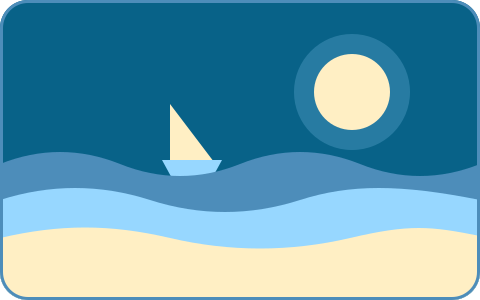

Quảng Phú Hưng
Backend & AI-oriented student building high-performance full-stack systems.
I design and build full-stack systems with a backend and AI focus: secure APIs, retrieval pipelines and reinforcement-learning agents. I study Information Systems at UIT, VNU-HCM.

Log 01
Journey
Where I study, and the teams I have led.
-
Team Leader, WebDev Adventure 2026
WebDev Studios Club & UIT, VNU-HCM
- Led a team of five that built and deployed GreenGrass, an event management platform, from requirements to release.
- Ran weekly sync-ups on a shared project board and kept the codebase consistent through peer reviews.
- Presented the platform to a panel of industry experts and won a Consolation Prize.
-
Team Leader, Fessior DevCamp 2026
Frontendly project
- Led the team building Frontendly, a full-stack application, and kept the frontend and backend architecture aligned.
- Set TypeScript standards using generics and utility types, and a reusable React and Tailwind CSS component library.
- Guided a Node.js REST backend with request-validation middleware and centralised error handling.
-
B.Sc. in Information Systems
University of Information Technology (UIT), VNU-HCM
- Expected graduation in 2028.
- Ranked 1st in the Information Systems Advanced Program in Semester 1 of AY 2025–2026, with an Academic Excellence Scholarship.
- Coursework: Data Structures & Algorithms, Discrete Mathematics, Database Management Systems, Object-Oriented Programming, Computer Networking.
Log 02
Projects
Things I have built, from event platforms to retrieval pipelines.
Log 03
Skills
The tools I reach for, grouped by where they sit in the stack.
Log 04
Contact
Have a project or a question? Write to me.